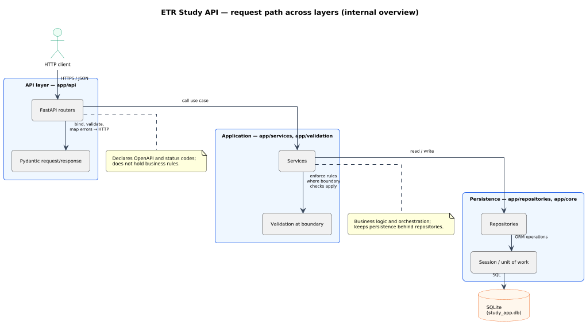

These pages explain the ETR Study API for people working in this repo: what the service does, how it is structured, and how it relates to OpenAPI and ADRs. OpenAPI alone does not carry all of that context — you will find it here.
The ETR Study API is a FastAPI application that provides a stable, documented HTTP surface for clients.
The codebase is organized in layers. Each layer has a defined responsibility. Processing follows a single direction: from the HTTP boundary inward to the database. This separation limits coupling and makes changes easier to review. The table below summarizes scope and rules; the diagram that follows shows a typical call path.
| Layer | Packages | Responsibility | Contract and constraints |
|---|---|---|---|
| API | app/api/ |
Expose HTTP endpoints; map requests and responses with Pydantic; call application services; dispatch work only—keep this layer thin. | Public behavior and error shapes must match OpenAPI (paths, schemas, examples). HTTP status codes and error payloads are owned here. |
| Application | app/services/, app/validation/ |
Implement use cases, domain rules, and step order. Boundary checks (headers, idempotency, contract-bound payload rules) live here or in helpers used by routers—not reimplemented in repositories. | Layering conventions: engineering practices. |
| Persistence | app/repositories/, DB session in app/core/ |
Load and persist data with SQLAlchemy; manage schema via migrations. | Storage details do not appear in the public HTTP contract. Database schema and constraints stay aligned with what clients see through OpenAPI. |
Illustrative flow from client to SQLite. The same layering applies across modules; the User documentation describes one resource in detail.

docs/uml/architecture/internal_readme_layer_boundaries.puml.
External developers must use the OpenAPI document as the contract: committed snapshot at
docs/openapi/openapi-baseline.json, explorer at
OpenAPI (test), live Swagger when the app runs at /docs.
Release-to-release changes are summarized in the repository root CHANGELOG.md
(ADR 0013).
Versioning rules (URL major version, additive changes within a major) follow ADR 0004.
Implementation detail is in the Python tree; this page does not duplicate file-by-file listings. When extending behavior, update tests, OpenAPI artifacts, and — when the change affects invariants or operational meaning — this internal documentation set per ADR 0026.
Health and metrics expectations follow ADR 0009. Structured logging and request correlation follow ADR 0023. When a feature introduces new failure modes or dashboards, describe how those signals are distinguished from normal client errors in a dedicated internal subsection or page — not only in code.
Operational recovery steps belong in Runbooks when they are procedural; this overview links policies to ADRs rather than replacing runbooks.
Policy stays in ADRs; narrative here must not contradict them.
| ADR | Topic |
|---|---|
| ADR 0025 | External vs internal API documentation — OpenAPI vs engineering narrative. |
| ADR 0026 | Internal service documentation as source of truth for described behavior. |
Who this is for: contributors and maintainers in this repository. External integrators should rely on OpenAPI and the root changelog.
Authority: For topics documented under docs/internal/, these pages are the
normative narrative where they explicitly describe behavior, per ADR 0026. Global policies remain in ADRs.
| Date | Summary |
|---|---|
| 2026-04-16 | Merged former service-overview.html into this page; one overview for project context
and
service scope. |
| 2026-04-14 | Initial internal service overview page; ADR 0025/0026 establish docs/internal/ norms.
|